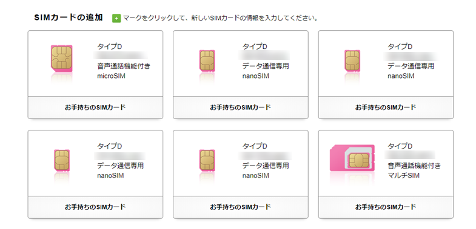

10月30日：iPhone 7 Plus をソフトバンク → IIJmio した
公開日：
iPhone 7 Plus を買って2年。ようやく解約月が来たので、ソフトバンクを解約して、IIJ へ移った。MNP には電話窓口を使ったのだけど（外に出るのが億劫だった）、オペレーターに繋ぐのに10分。あと、本人確認の質問を受けたんだけど、全部「はい」って答えるだけでパスするというザル認証で、ちょっとイライラした。どこへ転出するかも、自動音声のダイヤルプッシュと窓口のおばちゃんの2回も聞かれたし……。こんなん、Web だけで完結できるだろうって思った。
そもそもなんで最初から IIJ にせず、わざわざソフトバンク縛りで端末を買ったんだろうって思って昔のブログを読み返していたんだけど、MNP 周りでいろいろごたごたあってソフトバンクで買っちゃったんだな。
そんな MNP だけど、手続きはもう何度もやったことがあったし、今回はおおむね迷わずできた。電話で開通処理をしたのに一向に電波をつかまないのには閉口したけど、端末を再起動したら通信できるようになった。あと、マルチ SIM カードとやらで送られてきた。これ、初めてだわ。

2018 年 8 月 下旬配送分より、順次、マルチSIMカードをお届けします。
マルチSIMカードは、お客さまが1枚のSIM台紙から、標準、microまたはnanoのいずれかのサイズに取り外すことができるSIMカードです。
SIM のサイズを間違ってゲタを購入……なんてのも、これからはなくなるんだなぁ。
ついでに、今ある IIJmio の契約も整理しておく。
- 音声：iPhone 7 Plus
- 音声：おとんの電話
- データ：iPad mini 4
- データ：Essential Phone PH-1（→ Pixcel 3 がきたら音声 SIM に切り替えて差し替える予定）
- データ：iPad Pro（東京に行ったときに、弟1号に売却予定。余った SIM は Surface Go LTE に挿す予定）
- データ：おかんの iPad
IIJmio のファミリーシェアプランは最大10枚まで SIM を発行できる（音声 SIM は5枚まで）。おかんに iPhone を買ってあげようかなって思ってて、その SIM もウチで管理しようかなと考えている（じゃないと、変な営業に携帯電話を変えさせられてしまうので）けど、これ以上はあまり枚数を増やしたくないなー。
ちなみに、データ SIM の番号が1枚だけ 020- で始まってて、ちょっとおもしろかった。
NTTドコモは（2017年）10月2日より、「020」で始まる電話番号帯の使用を開始する。
020番号は、2017年1月の法改正にて、M2M（Machine to Machine）サービス専用として割り当てられた電話番号帯。原則としてデータ通信専用となっており、通話サービスは提供されない。キャリア3社に割り当てられ、10月より順次提供を開始する予定とされている。
へぇ、そんなことになってたんだな。あと、「020番号は緊急電話の維持などに使われる「ユニバーサルサービス料」の負担金徴収の対象外」なのだそうだ。ユニバーサルサービス料なんて微々たるもんだけど、料金がかからないんだったらそっちの方がいいわ。データから音声へ MNP したい場合にはまりそうだけど、なかなかそういうことはなさそうだし。